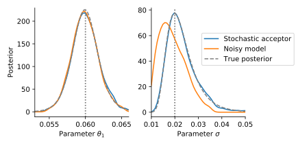
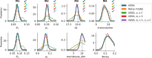

Efficient Exact Inference for Dynamical Systems with Noisy Measurements using Sequential Approximate Bayesian Computation
Yannik Schälte, Jan Hasenauer
preprint, bioRxiv 2020.01.30.927004Contents
- Basics of ABC
- Measurement noise in ABC
- An efficient approach
- Some applications
Basics of ABC
ABC-SMC
in algorithmic form-
For $t=1,\ldots,t_{N_t}$:
- until $N$ acceptances:
- sample parameter $\theta \sim g_t(\theta)$
- simulate data $y \sim \pi(y|\theta)$
- accept $\theta$ if $d(y, D) \leq \varepsilon_t$
- compute weights $w_i^t = \frac{\pi(\theta_i^t)}{g_t(\theta_i^t)}$
- until $N$ acceptances:
Measurement noise
Noise?
“We used ABC to parameterize our ODE”
“ABC does not use a likelihood”
“To avoid assumptions of a normal likelihood we use [...] ABC”
“We should at some point compare ABC and MCMC”
Noise!
“ABC provides exact inference for the wrong model”
... namely the acceptance step induces uniform noise
What happens when ignoring noise in ABC?
Assume: Model $y\sim p(y|\theta)$ does not account for noise.
But: Measurements are noisy, $D\sim \pi(\bar y|y,\theta)$.
an ODE model

a non-identifiable ODE model

an SDE model
Who left the noise out?
How to account for noise

Theorem (exact inference)
Using the modified kernel with $c>\pi(D|y,\theta)$ $\forall y,\theta$, we sample from the true posterior \[\pi_\text{ABC}(D|\theta) = \pi(D|\theta) \propto \int\pi(D|y,\theta)p(y|\theta)\mathop{dy}\cdot\pi(\theta)\] assuming noisy data $D\sim\pi(\bar y|y,\theta)$.
- non-trivial noise allows to do exact likelihood-free inference
- also applicable to stochastic models
- allows to parameterize the noise model
An efficient approach
Integrate in SMC
We temperate:
3. Accept with probability $\left(\frac{\pi(D|y,\theta)}{c}\right)^{1/T_t}$
with $c>\pi(D|y,\theta)$ $\forall y,\theta$, $T_0\gg 1$, $T_{N_t} = 1$.
This way, we take importance samples from \[\pi_{\text{ABC},t}(\theta|D)\propto\int\pi(D|y,\theta)^{1/T_t}p(y|\theta)\mathop{dy}\cdot\pi(\theta).\]
How to choose $c$?
- Highest peak of density (usually at $y=D$)
- Empirical highest peak
- Adaptive choice
Adaptive choice of $c$

Introduces a bias if simulations with a higher density occur.
However, this can be overcome ...
Theorem (Rejection Control Importance Sampling)
For any $c_t>0$, we have target the correct distribution when we accept with probability $\min\left[\frac{\pi(D|y,\theta)}{c},1\right]^{1/T_t}$ and update the weights to \[\tilde w := \frac{\left(\frac{\pi(D|y,\theta)}{c_t}\right)^{1/T_t}}{\min\left[\frac{\pi(D|y,\theta)}{c_t},1\right]^{1/T_t}}\cdot\frac{\pi(\theta)}{g_t(\theta)}.\]
Reweighting corrects for bias
Selection of temperatures
- Bridge from prior to posterior with $T_{N_t}=1$
- Balance information gain and acceptance rate
- Fallback: Exponential decay scheme $T_{t+1} = \alpha T_t$ with $\alpha\in(0,1)$
Acceptance rate scheme
- Predict acceptance rate based on previous simulations: \[\gamma_T \approx \frac 1 N \sum_{i=1}^N v_t(\theta_i^{(t-1)}) \min\left[\left(\frac{\pi(D | y_i^{(t-1)},\theta_i^{(t-1)})}{c_t}\right)^{1/T},1\right]\]
- Choose $T$ to fix rate to a constant value
- In particular allows to automatically choose $T_1$
Acceptance rate prediction works
ASSA: All combined
Adaptive Sequential Stochastic AcceptorImplementation
# define problem
abc = pyabc.ABCSMC(
model, prior,
acceptance_kernel,
temperature_scheme,
acceptor)
# pass data
abc.new(
database,
observation)
# run it
abc.run()
Some applications
Able to estimate noise parameters
Temperation smoothly transitions from prior to posterior

Applicable to various model types and noise models
| Id | Description | Type | Noise model | Parameters | Data |
|---|---|---|---|---|---|
| M1 | Conversion reaction | ODE | Normal | 2 | 10 |
| M2 | Conversion reaction | ODE | Laplace | 2 | 10 |
| M3 | Hodgkin-Huxley neurons | SDE | Normal | 2 | 100 |
| M4 | Gene expression | MJP | Poisson | 2 | 10 |
| M5 | STAT5 dimerization | ODE | Normal | 11 | 48 |
| M6 | Tumor spheroid growth | ABM | Normal | 7 | 30 |
Applicable to various model types and noise models
Orders of magnitude speed-up

Scales to challenging problems
11 parameters ODE model with real data (M5)
Scales to challenging problems
expensive multi-scale tumor growth model (M6)
Discussion
Summary
- Non-trivial noise model allows for exact likelihood-free inference
- Devised a widely applicable sequential approach
- Orders of magnitude speedup
Outlook
- Model selection by thermodynamic integration
- Optimize transitions
- Apply to multi-cellular models
Acknowledgments
Thanks to:
- Jan Hasenauer
- Elba Raimúndez-Álvarez
- Emad Alamoudi
- ...
Questions?
Backup
Multi-scale model of tumor growth (M6)
based on Jagiella et al., Cell Systems 2017
- cells modeled as interacting stochastic agents, dynamics of extracellular substances by PDEs
- simulate up to 106 cells
- 10s - 1h for one forward simulation